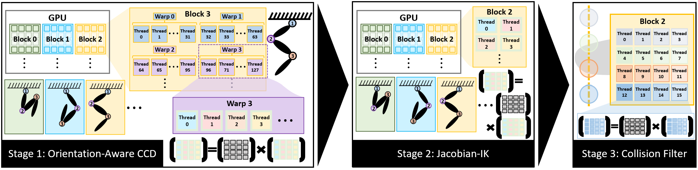
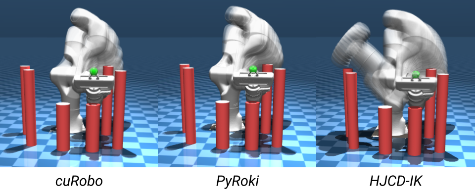
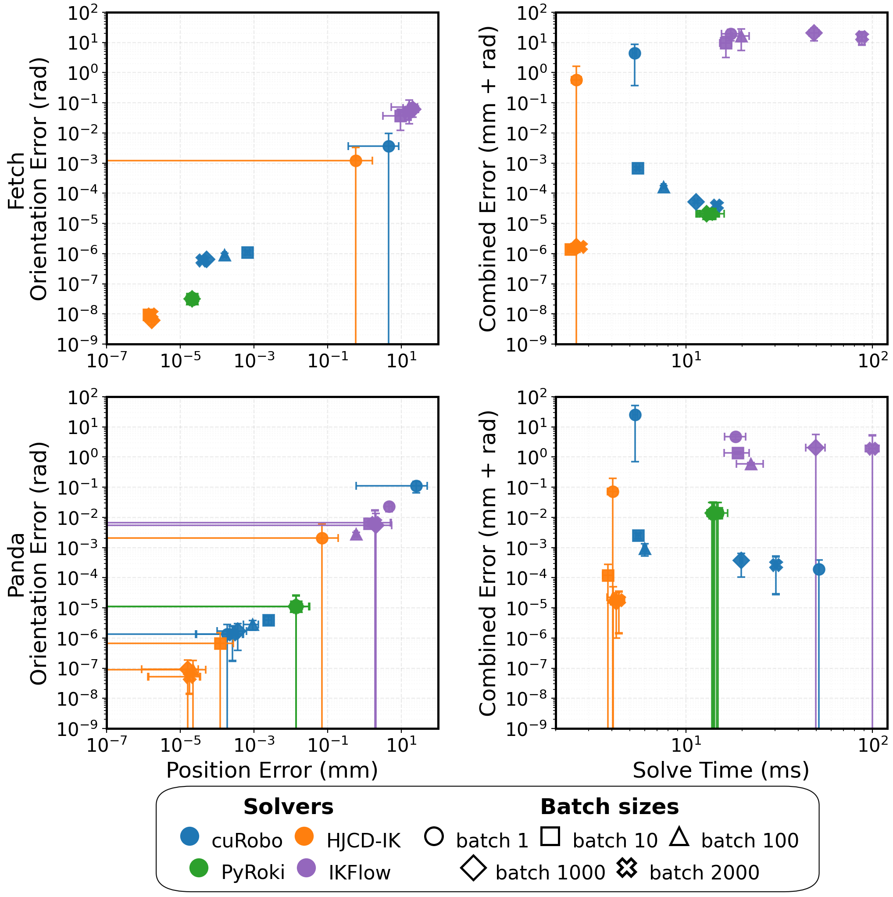
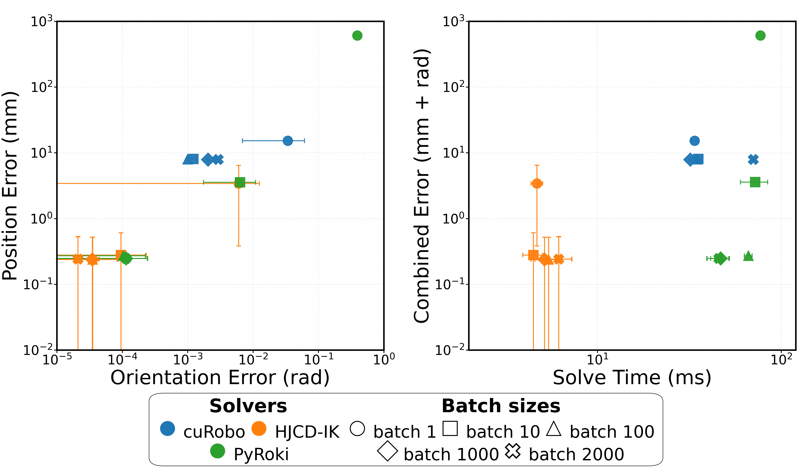
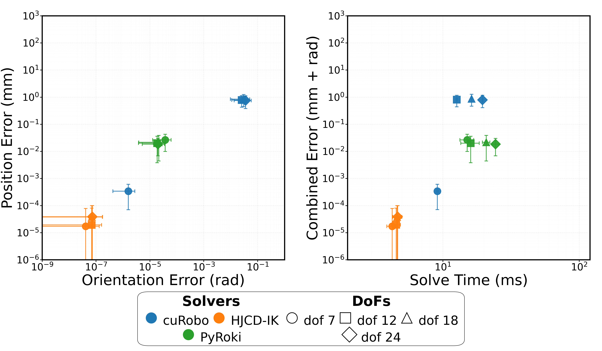
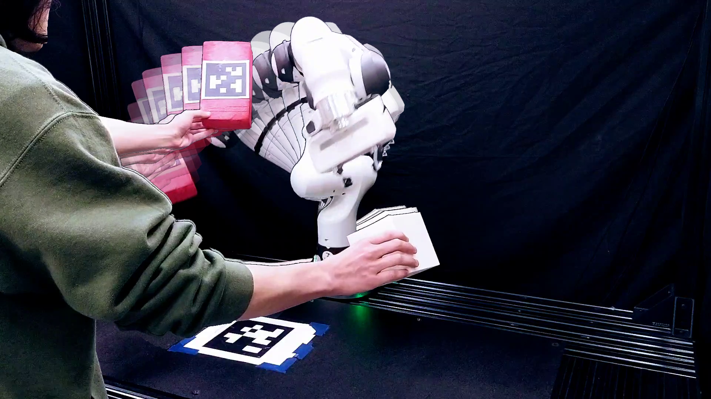

Inverse Kinematics (IK) is a core problem in robotics, in which joint configurations are found to achieve a (collision free) desired end-effector pose. Modern IK solvers face a fundamental trade-off: analytical methods are fast but lack generality, while numerical optimization-based methods are broadly applicable but prone to local minima and high computational costs. To overcome this challenge, we introduce HJCD-IK, a GPU-accelerated, sampling-based hybrid solver. By pairing a novel orientation-aware greedy coordinate descent initialization with Jacobian-based polishing and a parallel collision filter, our method achieves up to order-of-magnitude gains in speed and accuracy over state-of-the-art solvers, consistently finding collision-free solutions on the accuracy-latency Pareto frontier, while producing a diverse distribution of high-quality samples. We validate our solver on a physical Franka manipulator and release our code open-source.
HJCD-IK is a GPU-accelerated, three-phase sampling-based solver — co-designed for block-, warp-, and thread-level parallelism.

Hundreds to low-thousands of seeds run in parallel. A novel orientation-aware greedy coordinate descent — projecting in both position and orientation space — produces fast, diverse coarse solutions from random initializations.
The best seeds are polished by a batched Levenberg–Marquardt solver (trust region + line search, with dogleg / single-coordinate fallbacks), built on the GRiD library, to sub-millimeter and sub-degree accuracy.
A GPU-parallel two-stage hierarchical collision check against bounding spheres filters the refined batch for feasibility, returning collision-free solutions on the self-motion manifold.

Distribution of collision-free IK solutions for a representative target — cuRobo (left), PyRoki (center), HJCD-IK (right). HJCD-IK returns a broader spread of locally-optimal solutions, and a more accurate final result, in less time.
We benchmark HJCD-IK against three GPU-parallel solvers — cuRobo, IKFlow, and PyRoki — on the 7-DoF Franka Panda and Fetch arms (100 Halton open-world poses; the bookshelf_thin_panda MotionBenchMaker scene for collision-free), on an NVIDIA RTX 4060. HJCD-IK stays on or near the accuracy–latency Pareto frontier across every batch size and DoF, with order-of-magnitude gains:
| DoF | HJCD-IK | PyRoki | cuRobo |
|---|---|---|---|
| 7 | 4.25 | 15.09 | 9.11 |
| 12 | 4.55 | 16.29 | 12.66 |
| 18 | 4.62 | 20.82 | 16.26 |
| 24 | 4.66 | 24.34 | 19.55 |
Lowest error at every DoF, too (see paper Table III).
| Metric | HJCD-IK | PyRoki | cuRobo | IKFlow |
|---|---|---|---|---|
| MMD | 0.02261 | 0.04514 | 0.05348 | 0.03670 |
| MMD² | 0.00051 | 0.00203 | 0.00286 | 0.00134 |
Closest match to the full IK manifold.
Position / orientation / combined error vs. solve time — HJCD-IK (orange), cuRobo (blue), PyRoki (green). HJCD-IK stays on or near the frontier across batch sizes, collision-free problems, and degrees of freedom.

Open-world, by batch size (Table I)

Collision-free, bookshelf (Fig. 4, Table II)

DoF scaling, 7–24 (Fig. 5, Table III)
Full per-batch open-world and collision-free tables (Tables I–II) are in the documentation.

We deploy HJCD-IK on a 7-DoF Franka Research 3. Each camera frame yields the target and obstacle poses; HJCD-IK solves with a batch size of 1000 to obtain a diverse set of collision-free configurations on the self-motion manifold, and we move toward the one nearest the current configuration for smooth, real-time, collision-free tracking of moving obstacles.
@inproceedings{yasutake2026hjcdik,
title = {{HJCD-IK}: {GPU}-Accelerated Inverse Kinematics through Batched Hybrid Jacobian Coordinate Descent},
author = {Yasutake, Cael and Liu, Andrew H. and Kingston, Zachary and Plancher, Brian},
booktitle = {2026 IEEE/RSJ International Conference on Intelligent Robots and Systems (IROS)},
year = {2026},
note = {arXiv:2510.07514}
}